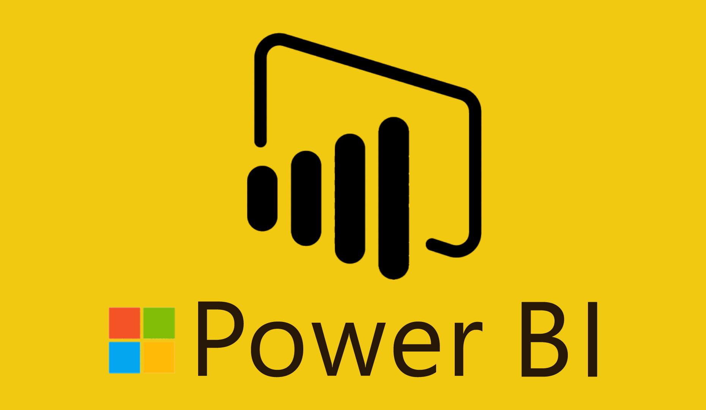

Classifying the merchants of an e-commerce client as fraud and
non-fraud.
Some merchants are doing some fraud while delivering the porduct like keep the other prodcut which is not ordered or placing the stone in the place of product our client provided some data and asked us to classify the merchants who are geniune and who are fraud

Classifying the people who will be with the retail and who will churn.
Retail store has privoded the data of its customers. They asked us to find the customers how are going to be churn and who are not churn.
And what measure they have to attract the customers who are going to be churn.
Classifying the wine into different classes.
our client has given the data about different wines and they asked us to classify the wines in different leves.
So it is a multiclass clasification problem.
And They asked us to develop a User Interface using the APIs

Predicting the price of a house in paris. The client has provided the data of a paris town.
We need to predict the cost of each price according to the requirements and location where the house is located etc.
After model building they asked us to develop a User Interface for this model using the APIs.

Classifying the data into booked category and not booked category.
We need build a ML model to classify the data into categories acoordingly.
After building the model we need to test is and they asked us to develop the User Interface using the APIs.

Analyzing the HR dataset and developing the dashboard.
After analyzing the HR attrition data. I had created KPI by employee
count, attrition rate etc. I had developed department wise attrition by pie chart
and developed bar chart, heat map and got some useful insights from the charts.
I had created the bins for the bar chart and applied education filter to the
dashboard.

Analyzing the customer data and developing the dashbord using the customer feedback data.
By sharing the link and QR code of the MS Form to the customers, which contains some questions about hotel feedback.
Dashboard contains differents charts like Bar chart, Donut chart, Ribbon chart, Gauge chart.
And I haved added some slicers based on purpose of vist and gender.
Analyzing the customer data and developing the dashbord using the E-commers data.
I have developed the dashboard by analyzing the E-Commers data and created some primary KPIs like YTD sales, YTD Profit, YTD Quantity, YTD Profit Margin.
And developed some charts like Bar chart, Map chart, Donut chart etc.
And added the slicer based on Segment.
Analyzing the road accident dataset in MS-Excel and developing the Dashboard.
I have analyzed the raod accident dataset and developed the dashboard for that data.
I have created some primary KPIs like Fatal Casualities, Serious Casualities, Slight Casualities, Casualities by car and Total Casualities by vehicle type.
And I have developed tha charts like Bar chart, Donut chart, Tree chart. And developed filters based on Accidents by year, and based on rural and urban category.
Classifying the calims as fraud and non fraud.
We need to build the ML model to classify whether the claim is fraud ot not.
After building the model it need to be tested and we need to deploy the model and develop the User Interface using APIs.

{kind=link}
{kind=link}
{kind=link}